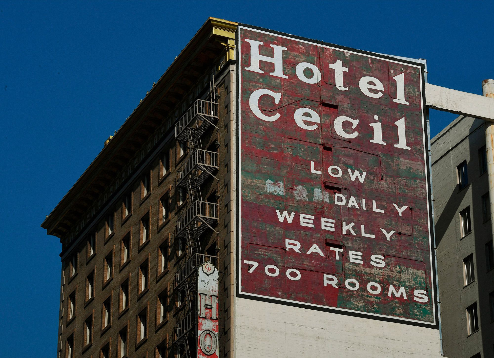
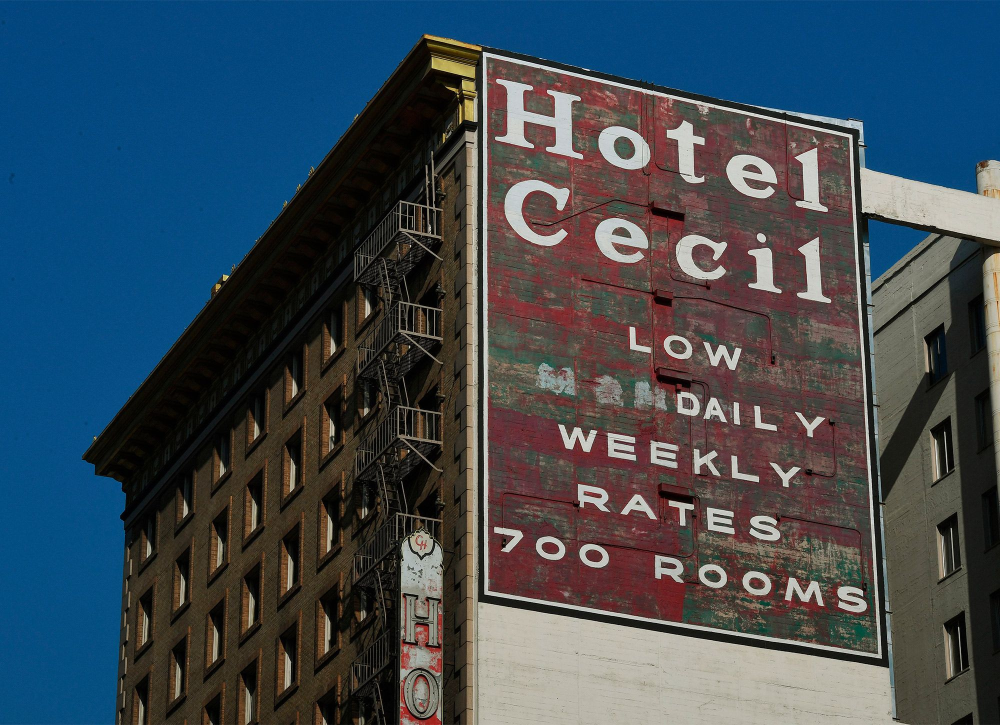

Escena del crimen: Desaparición en el hotel Cecil
2021 - Miniserie - 16+ - Documental
El célebre hotel Cecil cae en la infamia cuando desaparece su huésped Elisa Lam. Con el creador de Las cintas de Ted Bundy, explora los aspectos más oscuros del crimen.
Trailes
Series
El Hotel Cecil, el hotel del terror: asesinatos, desapariciones, muerte...
La leyenda negra del Hotel Cecil, en Los Ángeles lleva años conmocionando a la ciudad. Ahora, tras la emisión del documental de Netflix sobre la desaparición de Elisa Lam, la leyenda se ha hecho aún más grande
Hotel Muerte o El Suicidio, así le conocen en el castigado barrio de Skid Row, en Los Ángeles, al ahora famoso mundialmente, Hotel Cecil. Skid Row, un barrio marginal en el centro de la ciudad en el que se erige desde 1927, cuando el hotelero William Amontona Hanner decidió construir un monumental hotel para alojar a grandes empresarios, hombres de negocios, turistas con alto poder adquisitivo. Sí, funcionó, sólo durante algún tiempo. Después el Hotel Cecil se convirtió en el hotel del crimen, en el hotel del terror.
Gracias a Netflix y a su serie documental Escena del crimen: desaparición en el Hotel Cecil sobre la desaparición y muerte de Elisa Lam, la joven turista canadiense de 21 años que en el año 2013 fue encontrada muerta en uno de los depósitos del agua del hotel, el espectador puede no sólo seguir paso a paso la extraña desaparición, la errática investigación policial y la resolución final del caso de Elisa Lam, sino que puede adentrarse en el Hotel Cecil y descubrir que las historias de miedo, las historias de hoteles fantasmas hay veces que sí existen.
Para hacerse una idea de lo que es y ha sido, el pasado del Cecil llegó a inspirar la quinta temporada de la serie de FX American Horror Story, y ha sido el escenario de un episodio de 2021 de Buscadores de fantasmas. Ahí queda eso.
El documental, estrenado el pasado mes de febrero, cuenta la historia de la desaparición de Elisa Lam. Lam era una joven canadiense que decidió coger su mochila y viajar a la costa Oeste de EEUU. Muy prolífica en redes sociales, especialmente en Tumblr, Elisa Lam iba contando su viaje y sus experiencias hasta que llegó al Hotel Cecil, en realidad, al Hotel Stay on Main, una división del hotel original que los dueños hicieron para intentar separar lo truculento del Cecil y atraer sin historias de miedo y crímenes a los turistas. Una noche Elisa Lam desapareció. Ni una sola pista, nada de nada, hasta que la Policía de Los Ángeles hizo público un vídeo con las últimas imágenes de la joven. Un vídeo estremecedor que corrió como la pólvora y en el que se veía a Elisa Lam con un errático comportamiento que dio lugar a cientos de teorías sobre su desaparición. El extraño vídeo daba para ello, pero lo que llevó a cientos de los llamados investigadores de Internet a crear decenas de teorías criminales sobre qué le pasó a Elisa Lam fue el lugar en el que desapareció, el Hotel Cecil.
Imagenes Reales
 

Historia
Tambien Podrían gustarte: